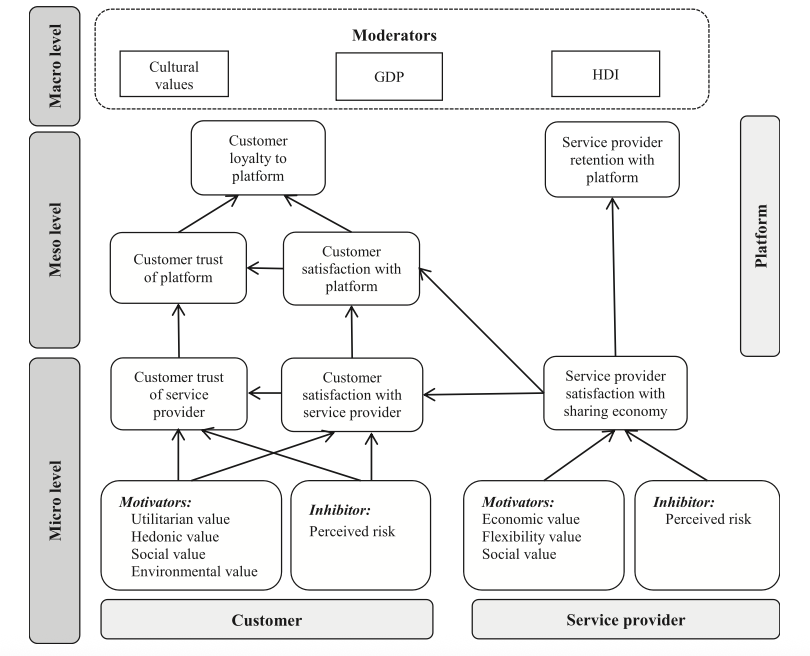
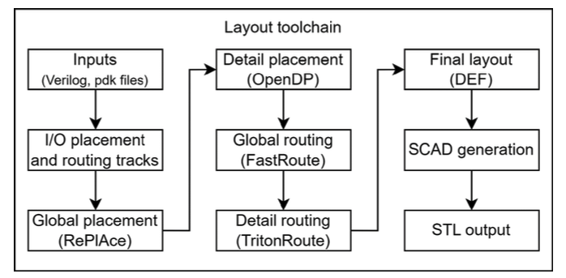
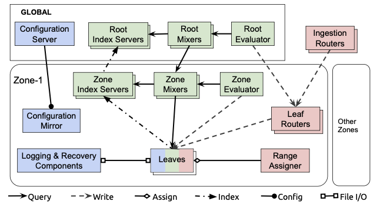

EM (Exact Match) and F1 scores on the Multi-hop Reasoning benchmark.
Metrics: EM (Exact Match), F1.Task categories: Overall, Computer Science, Economic Science, Environment Science, Life Science, Physical Science, Social Science.
Large Language Models (LLMs) have demonstrated remarkable capabilities across a wide range of language understanding and reasoning tasks. However, despite their success, their ability to explicitly structure information from complex text—capturing key entities, relations, and higher-order semantic organization—remains poorly understood and insufficiently evaluated. Existing benchmarks primarily assess surface-level generation or task-specific reasoning outcomes, leaving the fundamental problem of text-to-structure understanding largely unexplored.
To bridge this gap, we present T2S-Bench, the first benchmark specifically designed to evaluate and improve models’ text-to-structure capabilities. T2S-Bench comprises 1.8K high-quality samples spanning 6 scientific domains, 17 subfields, and 32 distinct structural types, covering a wide spectrum of real-world semantic structures. Solving tasks in T2S-Bench requires models to move beyond fluent text generation and instead perform explicit semantic structuring, which proves challenging for all existing models.
Using T2S-Bench, we conduct a comprehensive evaluation of 45 mainstream models across 10 model families. Our results reveal substantial headroom for improvement: on the multi-hop reasoning subset, the average exact-match accuracy is only 52.1%, and even the strongest model achieves merely 58.1% node accuracy on end-to-end structure extraction. These findings indicate that accurate text structuring remains a core bottleneck for current LLMs, even those excelling at downstream reasoning tasks.
EM (Exact Match) and F1 scores on the Multi-hop Reasoning benchmark.
Metrics: EM (Exact Match), F1.Node and Link scores on the End-to-End Evaluation benchmark.
Metrics: Node Similarity, Link F1.T2S-Bench is a comprehensive benchmark for evaluating models' ability to extract structured representations from scientific text. It includes three curated components: T2S-Train-1.2k for training, T2S-Bench-MR (500 samples) for multi-hop reasoning, and T2S-Bench-E2E (87 samples) for end-to-end structuring. Covering 6 scientific domains, 17 subfields, and 32 structure types, T2S-Bench provides high-quality, structure-grounded samples drawn from peer-reviewed academic papers. Every sample underwent 6K+ model search, 6 rounds of validation, and 3 rounds of human review, ensuring correctness in structure, text, and reasoning logic.
All data examples in T2S-Bench are organized into three high-quality subsets targeting different aspects of text-to-structure reasoning:
Notable statistics of T2S-Bench
Examples for each Major Science Topic in T2S-Bench-MR
Examples for each Major Science Topic in T2S-Bench-E2E
Diagram examples in Minor Science Topic in T2S-Bench-E2E
The ability to extract structured information from text can substantially improve the performance of LLMs in a wide range of real-world applications, such as generating figures for scientific papers and creating presentation slides. To provide an intuitive demonstration of this effect, we present a comparison of figures generated from the same scientific text with and without structured reasoning.
Without Structure-of-Thought: We directly prompt the Nanobanana to generate an overview figure from the input text.
With Structure-of-Thought: We first guide Nanobanana to organize the paper into its structural components, producing key points and the relationships among them. The model then generates the figure based on both the text and the structured representation.
As shown in the comparison, the figure produced with Structure-of-Thought is significantly closer to a human-created scientific diagram in terms of layout, logical organization, and visual clarity. This result indicates that text structuring is a critical capability that models should acquire, as it enables them to more effectively assist users in practical, everyday tasks.
The manual standard features explicit vertical tiering and a distinct central platform.

Captures structural logic perfectly, mimicking vertical flow and horizontal bands.

Fails overarching hierarchy, relying on deep nesting that ruins readability.

Notice the clear, sequential step-by-step pipeline organized into distinct columns (Inputs → Placement → Routing → Output).

By mapping the layout first, the model perfectly captured the three-phase column structure and the exact linear execution sequence of OpenROAD.

Without an overarching structural thought process, the model lumps complex steps into generic boxes and creates an awkward visual flow.

Strict use of macro-containers ("GLOBAL" and "Zone-1") to encapsulate complex sub-systems safely.

Understands hierarchical limits, using dashed boundaries to partition the system flawlessly.

Fails container logic, dropping global nodes directly onto the canvas resulting in tangled pathways.

@inproceedings{
}